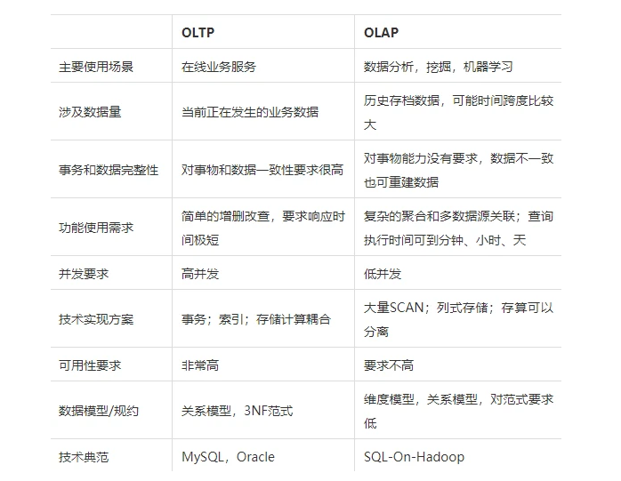
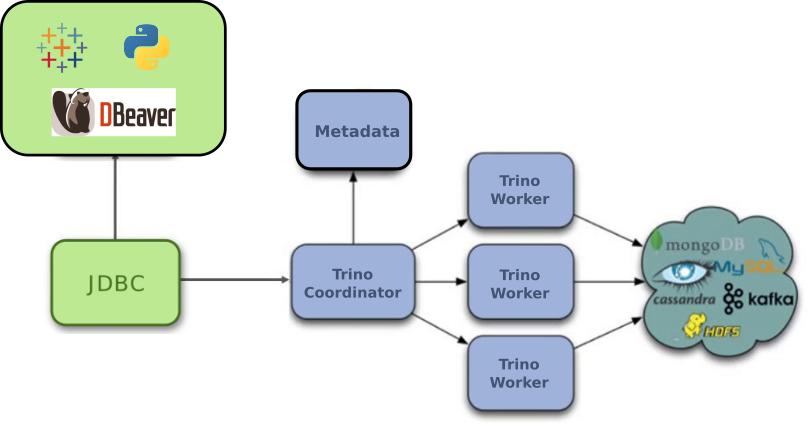

大数据计算之Trino简介

Trino(即以前的Presto SQL)是为分布式数仓和分析设计的高效在线分析处理(OLAP)工具。与HIVE等数仓工具相比，Trino尤其适用于在大量数据中快速返回查询结果。除HDFS，Trino也支持传统的关系型数据库和其他如Cassandra、MongoDB等半结构化数据，且可以同时跨多个不在同一数据中心源查询。
OLAP是什么
OLAP（On-line Analytical Processing，联机分析处理）是在基于数据仓库多维模型的基础上实现的面向分析的各类操作的集合。可以比较下其与传统的OLTP（On-line Transaction Processing，联机事务处理）的区别来看一下它的特点： 
Trino架构及工作原理
 如图示，Trino使用与经典大规模并行处理(MPP)数据库管理系统相似的架构，主要包括一个Coordinator节点和若干Worker节点。用户提交SQL任务时，Coordinator负责语句解析，制定查询计划，管理和调度Worker节点。Worker节点负责任务执行和数据处理，包括从connectors获取数据、与其他Worker节点交换中间数据。Trino集群中节点之间通过REST API通信，由于在内存中的处理，避免了不必要的 I/O 开销，查询结果的返回速度非常快。中间数据以MPP方式跨节点流水线传输，因此可实现高度交互的查询性能。它设计用于支持标准ANSI SQL语义，包括复杂查询、聚合、联接、左/右外联接、子查询、开窗函数、不重复计数和近似百分位数。
Trino基础
数据模型
Trino使用Catalog、Schema和Table 3层结构来管理数据
- Catalog: 可以理解为数据源，包含多个Schema，通过connector引用一种数据源，比如hive。可以通过
show catalogs命令查看Trino连接的所有数据源。 - Schema: 相当于数据库的概念，一个Schema包含多张数据表。
show schemas from <catalog_name>可列出catalog_name下的所有schema。 - Table: 表，和其他MySQL等关系型数据库的表一样，包含无序的列，
show tables from <catalog_name.schema_name>可查看catalog_name.schema_name下的所有表。
综上，Trino定位一张表的描述是：数据源.数据库.数据表，即增加了Catalog的概念。
连接Trino
./trino --server http://trino:8080 --catalog hive --schema tiny --user hive --debug
Trino与其他OLAP引擎的对比
| 引擎/对比项目 | Kylin | Presto | Impala | Druid | SparkSQL | ES | Kudu | ClickHouse | Doris | TiDB | Hive | Greenplum | SnappyData | Hawq |
|---|---|---|---|---|---|---|---|---|---|---|---|---|---|---|
| 亚秒级响应 | Y | N | Y | Y | N | N | Y（据说可以到达秒级） | 单表查询Y，多表查询N | Y（ms-s性能高于Kylin‘） | N | N | Y | Y | N |
| 高并发 | Y | N | Y | Y | N | N | Y | N | N | Y | Y | N | Y | Y |
| 百亿数据集 | Y | Y | Y | Y | Y | Y | Y | Y | Y | N | N | Y | ||
| SQL支持 | Y | Y | Y | N（开发中） | Y | N | Y（结合Impala可支持SQL查询） | Y（支持Sql中基本语法对于开窗函数还不支持） | Y | Y | Y | Y | Y | Y |
| 离线 | Y | Y | Y | Y | Y | Y | Y | Y | Y | Y | Y | Y | Y | Y |
| 实时 | N（开发中，目前主要支持Kafka 流构建 Cube） | N | N | Y | N | Y | Y（Spark Streaming） | Y（实时数据分析领域的黑马） | Y | Y | N | N | Y | N |
| 精准去重能力 | Y | Y | Y | N | Y | N | Y | Y | Y | Y | Y | Y | Y | Y |
| 是否支持明细查询 | N | Y | N | N | Y | Y | Y | Y | Y | Y | Y | Y | Y | Y |
| 多表join | Y | Y | Y | N | Y | N | Y | Y | Y | Y | Y | Y | Y | Y |
| 能否更改模型 | N | Y | N | N | Y | N | Y | Y（更换表引擎） | N | Y | Y | N | Y | 未知 |
| JDBC/ODBC for BI集成 | Y | Y | N | N | Y | N | Y | N | Y | Y | Y | N | Y | Y |
| WEB GUI | Y | Y | Y | N | N | N | Y | Y | N | Y | N | 未知 | 未知 | Y |
| REST API | Y | N | Y | N | N | Y | N | N | N | N | N | 未知 | N | N |
| 社区活跃度 | 活跃 | 活跃 | 活跃 | 活跃 | 活跃 | 活跃 | 较活跃 | 不太活跃 | 刚起步，核心用户只有Baidu； | 较活跃 | 活跃 | 活跃 | 较活跃 | 较活跃 |
| 存储能力 | shared nothing | shared nothing | 纯计算 | shared nothing | 无 | 计算+存储 | 列式存储 | 计算+存储 | 计算+存储 | 计算+存储 | 存储到HDFS | 计算+存储 | shared | noting |
| 成本 | 中 | 中 | 中（CDH据说要收费） | 中 | 低 | 中 | 中 | 高 | 中 | 中 | 低 | 未知 | 高 | 中 |
| 易用性 | 安装便捷，简单轻量，选择维度表和度量即可构建Cube | 安装简单，基于内存，查询代价较大 | 部署简单，基于内存，查询代价较大 | 部署简单，基于内存 | 部署简单 | 部署较简单，但是难用目前发展趋向于专人专岗 | 部署简单，需要开发门槛较高，基于磁盘 | 简单易用 | 按装复杂 | 安装部署较为复杂 | 部署较简单 | 未知 | 未知 | 部署比较复杂 |
| 监控成本 | 自带监控组件、运维成本低 | 有公共web监控管理 | 自带监控组件，运维成本低 | 自带监控可配置，有web页面 | 自带监控 | 可以使用Kibana实现，成本较高 | 已经集成到CDH中，便于监控 | 自身具有简单的监控组件，可以联合其他的监控工具进行监控 | 监控的集中到Prometheus | 使用开源的 metric 分析及可视化系统Grafana 进行监控 | 无自带监控，阿里云有配合hive的监控，成本高 | 未知 | 运维成本高 | 支持多种工具监控 |
下面我们介绍这些系统
SQL on Hadoop 系统：无法支持更新，性能也较差。
TiDB：
TiDB虽然当初号称可以支撑100%的 TP 和 80%的 AP，但是架构设计主要是面向TP场景，缺少针对AP场景专门的优化，所以OLAP查询性能较差，TiDB 团队目前正在研发专门的 OLAP 产品：TiFlash，TiFlash 具有以下特点：列存，向量化执行，MPP，而这些特点Doris也都有。
SnappyData：
SnappyData是基于Spark + GemFire实现的内存数据库，存储引擎，全内存、行列混合存储且完全不需预处理，支持SQL与Spark SQL。SnappyData是个兼顾MPP的特点且colocate特性使得数据本地化，支持join、列表的update以及窗口函数等任意的adhoc查询，
主要的优点： 是性能高，列存压缩+全内存，数据状态共享，秒级查询、实时性强，支持kafka的stream table以及实时导入、处理方式简单，无需预处理，保存明细数据，数据本地存储、灵活性高，是个sql数据库，支持任意字段的查询、update以及窗口函数和复杂的adhoc查询、易用性强，支持标准SQL和Spark SQL，精准去重，支持各种分许函数。
缺点： 是机器成本较高，此外 SnappyData 的计算是基于 JVM 的，会有 GC 问题，影响查询稳定性，维护成本高。
主要使用场景：SnappyData适合那种数据规模中等(PB以下)，需求变化较多，实时性要求较高、响应时间较短且复杂的窗口函数类查询；同时适合查询明细数据以及探索式的adhoc查询如果数据规模不大，且希望找到一种简单易用且实时性要求高的多维OLAP引擎，最重要的是可供分析人员使用的SQL的引擎，那么SnappyData比较适合。前提是需要在成本与效率之间做个平衡，SQL固然能提高开发效率，但内存较大的服务器成本也确实相对较高。
ClickHouse：
Clickhouse是一款单机性能十分彪悍的OLAP系统，ClickHouse作为目前所有开源MPP计算框架中计算速度最快的，它在做多列的表，同时行数很多的表的查询时，性能是很让人兴奋的，但是在做多表的join时，它的性能是不如单宽表查询的。
性能测试结果表明ClickHouse在单表查询方面表现出很大的性能优势，但是在多表查询中性能却比较差，不如presto和impala、hawq的效果好，同时当集群加减节点后，系统不能自动感知集群拓扑变化，也不能自动balance数据，导致运维成本很高，此外Clickhouse也不支持标准SQL，我们用户接入的成本也很高。另外ClickHouse可以与Superset对接展示，对clickhouse的监控可以使用Grafana监控。
Doris：
对我们用户来说，Doris的优点是功能强大，易用性好。 功能强大指可以满足我们用户的需求，易用性好主要指 兼容Mysql协议和语法，以及Online Schema Change。 兼容Mysql协议和语法让用户的学习成本和开发成本很低， 因为在业务快速发展和频繁迭代的情况下，Schema变更会是一个高频的操作。对我们来说，Doris的优点是易运维，易扩展和高可用、易运维指Doris无外部系统依赖，部署和配置都很简单。易扩展指Doris可以一键加减节点，并自动均衡数据。高可用值Doris的FE和BE都可以容忍少数节点挂掉。
SparkSQL：
SparkSQL是Hadoop中另一个著名的SQL引擎，它以Spark作为底层计算框架，Spark使用RDD作为分布式程序的工作集合，它提供一种分布式共享内存的受限形式。在分布式共享内存系统中，应用可以向全局地址空间的任意位置进行读写操作，而RDD是只读的，对其只能进行创建、转化和求值等操作。这种内存操作大大提高了计算速度。SparkSql的性能相对其他的组件要差一些，多表单表查询性能都不突出。
Impala：
官方宣传其计算速度是一大优点，在实际测试中我们也发现它的多表查询性能和presto差不多，但是单表查询方面却不如presto好。而且Impala有很多不支持的地方，例如：不支持update、delete操作，不支持Date数据类型，不支持ORC文件格式等等，所以我们查询时采用parquet格式进行查询，而且Impala在查询时占用的内存很大。
Presto：
综合性能比起来要比其余组件好一些，无论是查询性能还是支持的数据源和数据格式方面都要突出一些，在单表查询时性能靠前，多表查询方面性能也很突出。由于Presto是完全基于内存的并行计算，所以Presto在查询时占用的内存也不少，但是发现要比Impala少一些，比如多表join需要很大的内存，Impala占用的内存比Presto要多。
HAWQ：
吸收了先进的基于成本的SQL查询优化器，自动生成执行计划，可优化使用hadoop集群资源。HAWQ采用Dynamic pipelining技术解决这一关键问题。Dynamic pipelining是一种并行数据流框架，利用线性可扩展加速Hadoop查询，数据直接存储在HDFS上，并且其SQL查询优化器已经为基于HDFS的文件系统性能特征进行过细致的优化。但是我们发现HAWQ在多表查询时比Presto、Impala差一些；而且不适合单表的复杂聚合操作，单表测试性能方面要比其余四种组件差很多，hawq环境搭建也遇到了诸多问题。
GreenPlum：
作为关系型数据库产品，它的特点主要就是查询速度快，数据装载速度快，批量DML处理快。而且性能可以随着硬件的添加，呈线性增加，拥有非常良好的可扩展性。因此，它主要适用于面向分析的应用。比如构建企业级ODS/EDW，或者数据集市等，GREENPLUM都是不错的选择。
ElasticSearch：
ES是典型的搜索引擎类的架构系统，在入库时将数据转换为倒排索引，采用Scatter-Gather计算模型提高查询性能。 对于搜索类的查询效果较好，
缺点 但当数据量较大时，对于Scan类和聚合类为主的查询性能较低，
主要优点: 是性能较高，支持倒排索引和各种过滤后的聚合查询、实时性强，在文档上建立完索引后，立刻可以查询、处理方式简单，无需预处理，
主要缺点 是支持的数据规模较小，高并发不理想并且灵活性差，不支持复杂的adhoc查询，在易用性方面也差，不支持SQL；DSL成本高，且不能精准去重，
主要适用场景：ES适合那种全文检索，且数据规模较少时过滤条件很多的聚合查询，并发度也不大的场景。
Druid:
是一个实时处理时序数据的OLAP数据库，因为它的索引按照时间分片，查询的时候也是按照时间线去路由索引。
Kylin：
核心是Cube，Cube是一种预计算技术，基本思路是预先对数据作多维索引，查询时只扫描索引指向的结果而不访问原始数据从而提速。
Kudu：
Kudu的定位不是in-memory database。因为它希望HDFS/Parquet这种存储，因此大量的数据都是存储在磁盘上。如果我们想要拿它代替HDFS/Parquet + HBase，那么超大数据集的查询性能就至关重要，这也是Kudu的最初目的。然而，官方没有给出这方面的相关数据。由于条件限制，网易暂时未能完成该测试。Kudu本质上是将性能的优化，寄托在以列式存储为核心的基础上，希望通过提高存储效率，加快字段投影过滤效率，降低查询时CPU开销等来提升性能。而其他绝大多数设计，都是为了解决在列式存储的基础上支持随机读写这样一个目的而存在的。
Flink
此外我还对flink进行了调研（调研时间是2020年2月）发现，flink核心是个流式的计算引擎，通过流来模拟批处理，flink sql还处于早期开发阶段，未来社区计划通过提供基于REST的SQL客户端，目前sql客户端不能直接访问hive，通过YAML file文件定义外部数据源，可以连接文件系统和kafka。presto、druid、sparkSQL、kylin这几个，其实他们可以分为三类。其中presto和spark sql都是解决分布式查询问题，提供SQL查询能力，但数据加载不一定能保证实时。Druid是保证数据实时写入，但查询上不支持SQL，或者说目前只支持部分SQL，我个人觉得适合用于工业大数据，比如一堆传感器实时写数据的场景。Kylin是MOLAP，就是将数据先进行预聚合，然后把多维查询变成了key-value查询。从成熟度来讲：
kylin>sparksql>Druid>presto从超大数据的查询效率来看：
Druid>kylin>presto>sparksql从支持的数据源种类来讲：
presto>sparksql>kylin>Druid
总结
得益于简单的架构、常驻进程、全内存计算等特点，Trino尤其适合快速返回结果的场景，如交互式的OLAP工具，多数查询能在几秒内返回。不用像Spark、Hive等计算引擎，查询的发起需要经过资源申请、Yarn调度、进程启动、中间结果落磁盘等环节。另外Trino数据在内存中处理，吞吐量受内存限制，在高吞吐、低成本、高稳定性方面仍然不能代替Hive，Spark。Trino官方正在做Spill To Disk的功能，但是如果计算过程中有数据落盘操作，磁盘IO将可能成为瓶颈，从而影响Query的执行速度。
Trino容器化
Trino的运行不依赖传统的大数据生态，如HDFS，YARN等，也没有自己的存储系统，且自身架构简单，包袱少等特点使其对容器云原生等新技术的融入更有优势。不仅镜像化交付，在接入K8s生态也较容易。生产中可通过deployment+service+configmap的方式即可部署起来(实际上官方提供的helm chart就是这么做的)，也可开发自定义operator的方式，自动进行节点(POD)的扩缩容、资源隔离、配置管理等，降低运维难度。